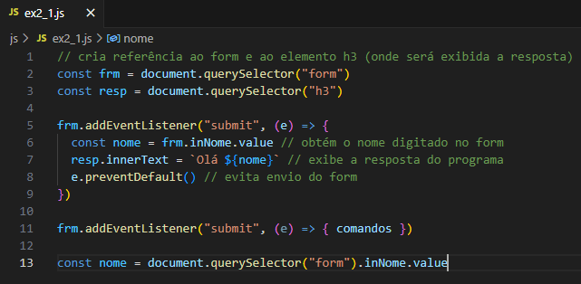
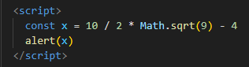
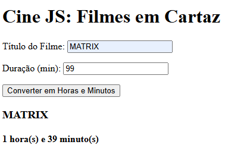
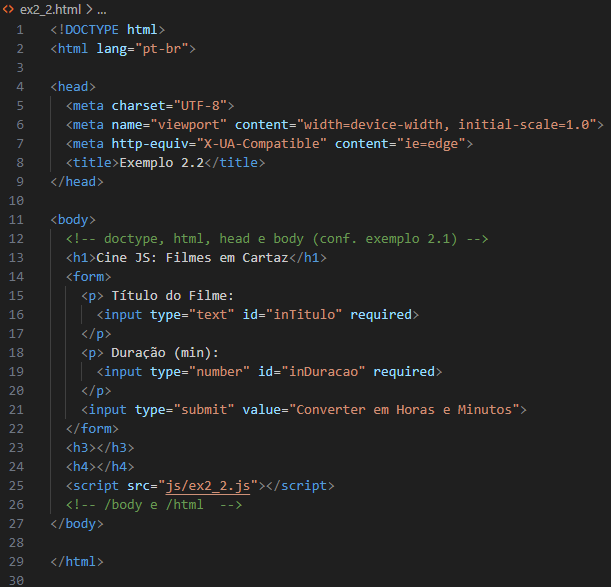
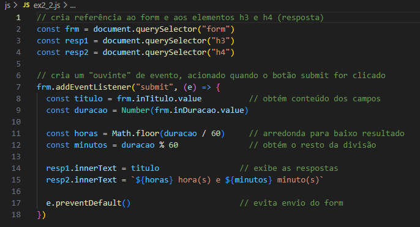
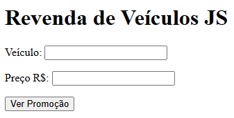
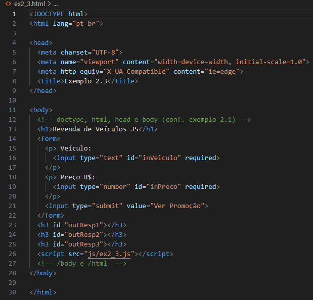
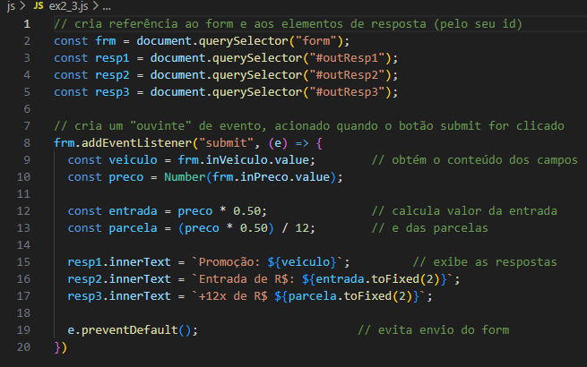

Voltar para a página principal
CAPÍTULO 02 - Integração com HTML
2.2 Cabeçalhos, parágrafos e campos de formulário


 |
 |
 |
2.4 Métodos querySelector() e getElementById()
Para referenciar um elemento HTML identificado no documento, podemos utilizar os métodos querySelector() ou getElementById(). Esses métodos permitem referenciar qualquer elemento da página – como um campo de formulário, um parágrafo, um botão, uma imagem, entre outros. Com o método getElementById(), para que um elemento HTML seja referenciado, ele precisa conter um atributo id. Já o método querySelector() é mais amplo, e permite criar uma referência a um elemento HTML pela sua tag name, id ou classe. Observe os exemplos:

Uma desvantagem do querySelector() é que ele não é suportado por versões antigas dos navegadores (navegadores lançados antes de 2008 ou 2009).
Para resolver isso surgiram os chamados “transpiladores” de código. O Babel (babeljs.io) é um dos principais softwares desse segmento para javaScript.
Observe ainda, nos exemplos, que podemos armazenar a referência a um elemento em uma variável e depois obter a sua propriedade, como descrito a seguir:

Ou, então, utilizar um único comando, acessando diretamente a propriedade que queremos obter, como a seguir.

Se o programa trabalhar com o mesmo elemento mais de uma vez, é recomendado armazenar a localização dele em uma variável (exemplo de duas linhas). Caso contrário, você pode fazer uma referência direta a sua propriedade (exemplo de uma linha). Nos exemplos do livro, daremos preferência pelo uso dos comandos em duas linhas, a fim de padronizar o formato (facilitar o aprendizado). E os nomes de variáveis, em campos de formulários serão precedidos pelas letras in (input), e espaços de saída, quando identificados, serão precedidos por out (output).
2.5 Introdução a eventos e funções
Muito da programação JavaScript construída em páginas web é desenvolvida desta forma: elas são acionadas a partir da ocorrência de um evento. Quando o usuário executa uma ação, o programa responde ao evento do usuário com uma ou mais ações. O evento mais comum de ser programado para um formulário é o clique no botão submit. Mas há diversos outros, como modificar o conteúdo de um campo, clicar sobre um elemento da página, sair de um campo, carregar a página, entre outros. Mais detalhes sobre os eventos serão apresentados no capítulo 8.
Para criar um evento e definir o que será executado quando este evento ocorrer, deve-se utilizar uma palavra reservada para indicar qual evento a linguagem ficará na “escuta”. A palavra reservada pode ser, por exemplo, submit, change, click, blur ou load. Para adicionar um ouvinte de evento a um elemento da página, utiliza-se o método addEventListenert(), com o evento e o nome de uma função ou uma arrow function (função de seta) com os comandos a serem executados. Observe a sintaxe desse método:

2.6 Propriedades innerText, innerHTML e value
As propriedades value e innerText serão utilizadas em praticamente todos os programas desenvolvidos neste e nos demais capítulos.
A propriedade value obtém ou altera o conteúdo de um campo de formulário HTML. Portanto, para obter o nome do usuário informado no Exemplo 2.1, é preciso utilizar essa propriedade.
Já a propriedade innerText serve para alterar ou obter o conteúdo de elementos de texto do documento identificados no código HTML. É possível, portanto, alterar o texto de qualquer parágrafo ou texto de cabeçalho em uma página web utilizando essa propriedade.
Há também a propriedade innerHTML, semelhante a innerText quanto aos elementos em que atua, porém renderiza os códigos HTML existentes no seu conteúdo. A Tabela 2.1 destaca a diferença entre as propriedades innerText, innerHTML e value.
Tabela 2.1 – Comparativo entre as propriedades innerText, InnerHTML e value
| innerText | Consulta ou altera o texto exibido por elementos HTML como parágrafos (p), cabeçalhos (h1, h2,...) ou containers (span, div). |
| innerHTML | Consulta ou altera o conteúdo de elementos HTML como parágrafos (p), cabeçalhos (h1, h2,...) ou containers (span, div). Códigos HTML presentes no conteúdo são renderizados pelo navegador. |
| value | Consulta ou altera o conteúdo de campos de formulário. |
A propriedade innerHTML pode apresetar algum risco relacionado à segurança na construção de páginas web em um tipo de ataque denominado XSS (Cross-Site Scripting). Para evitar esse problema, é necessário filtrar os dados de entrada de um site. Caso o conteúdo a ser exibido na página pelo programa não contenha dados informados pelo usuário, não há riscos em utilizar o innerHTML.
As propriedades textContent ou outerText são semelhantes ao innerText . Sinta-se à vontade, se preferir utilizá-las no lugar de innerText.
2.7 Método preventDefault()
Por padrão, quando o usuário clica sobre o botão submit de um formulário, uma ação de envio dos dados desse form é executada. Isso faz um reload da página, e tanto o conteúdo dos campos do form quanto das respostas exibidas pelo programa são perdidas. O método preventDefault() previne esse comportamento default do botão submit. Observe que ele é aplicado sobre um event passado por parâmetro (e) na construção da arrow function. Esse assunto de passagem de parâmetros será abordado no capítulo 8.
Neste capitulo, novos termos foram utilizados na descrição dos programas, como objeto, método e propriedade. Observe a seguir, de uma forma resumida, o que cada um deles representa em um programa.
OBJETO - representa uma instância de uma classe.
MÉTODO - representa uma instrução ou um conjunto de instruções que executam uma tarrefa.
PROPRIEDADE - representa uma característica (atributo) de um objeto.
No exemplo 2.1 abaixo, utilizamos o objeto document, que a partir da execução do método querySelector() pode referenciar as tags form e h3 da página. Já a propriedade value é utilizada para obter o conteúdo digitado no campo de formulário. A propriedade innerText, por sua vez, altera um atributo do documento, que faz com que a resposta seja exibida na página.
2.8 Operadores aritméticos e funções matemáticas
Operadores de adição (+), subtração (-), multiplicação (*), divisão (/) e exponenciação (**), módulo (%). O módulo é utilizado para obter o resto da divisão entre dois números. Observe as seguintes expressões matemáticas:
Const a = 5 % 2 // a = 1
Const b = 7 % 4 // b = 3
Na primeira expressão, a variável a recebe 1 porque 5 dividido 2 é 2 e o resto é 1. Na segunda expressão, a variável b recebe 3 porque 7 dividido por 4 é 1 e o resto da divisão é 3.
Outros cálculos como raiz quadrada, seno e cosseno podem ser obtidos em JavaScript com o uso das funções matemáticas da classe Math. A Tabela 2.2 apresenta as principais funções matemáticas da linguagem e destaca um exemplo explicado no livro no qual cada função é utilizada.
Tabela 2.2 – Principais funções matemáticas da classe Math
| Math.abs(num) | Retorna o valor absoluto de um número, ou seja, se o valor for negativo, ele será convertido para positivo. Se positivo, o valor permanece o mesmo. Exemplo: Math.abs(-3) => 3 Veja uma aplicação de Math.abs() no Exemplo 8.3 |
| Math.ceil(num) | Arredonda o valor para cima. Dessa form, se o valor possuir decimais, retorna o próximo número inteiro do valor analisado. Exemplo: math.ceil(4.2) => 5 Veja uma aplicação de Math.ceil() no Exemplo 9.2 |
| Math.floor(num) | Arredonda o valor para baixo, retornando a parte inteira do número. Exemplo: Math.floor(7.9) => 7 Veja uma aplicação de Math.floor() no Exmeplo 2.2 |
| Math.pow(base, exp) | Retorna a base elevada ao expoente. Exemplo: Math.pow(3, 2) => 9 Veja uma aplicação de Math.pow() no Exemplo 3.2 |
| Math.random() | Retorna um número aleatório entre 0 e 1, com várias casas decimais. O número aleatório possível inicia em 0 e vai até um valor inferior a 1. Exemplo: Math.random() => 0.6501314074022906 Veja uma aplicação de Math.random() no jogo do Exemplo 5.2 |
| Math.round(num) | Arredonda o valor para o inteiro mais próximo. A partir de .5 na parte fracionária, o valor é arredondado para cima. Antrior a .5, é arredondado para baixo. Exemplo: Math.round(2.7) => 3 Veja uma aplicação de Math.round() no Exemplo 6.10 |
| Math.sqrt(num) | Retorna a raiz quadrada do número (square root). Exemplo: math.sqrt(16) => 4 Veja uma aplicação de Math.sqrt() no Exemplo 3.5 |
Ao criar expressões matemáticas, devemos ter o cuidado com a ordem de precedência dos operadores.
Os parênteses redefinem a ordem das prioridades. Podem ser utilizados vários conjuntos de parênteses em uma mesma expressão.
As funções matemáticas ou funções criadas pelo usuário têm prioridades sobre os demais operadores aritméticos.
Exemplo: Math.sqrt(9) * 8 / 2
Cálculo(1): 3 * 8 / 2
Cálculo(2): 24 * 2
Resultado: 12
Os operadores de multiplicação, subtração e módulo têm prioridade sobre os operadores de adição e subtração.
Caso uma expressão contenha operadores de mesmo nível de hierarquia, o resultado é calculado da esquerda para a direita.
Caso tenhamos uma expressão matemática complexa em um programa, podemos dividi-la em fórmulas menores, atribuídas a variáveis que armazenam os valores de cada parte da expressão. Como cada variável ocupa um espaço de memória, isso também implica um consumo maior de memória. Contudo, deve-se analisar cada caso e, dependendo da situação, optar pela forma que privilegia um melhor entendimento dos cálculos de um sistema.
Para realizar testes e verificar o resultado de fórmulas que utilizam operadores aritméticos de diferentes níveis de hierarquia, pode-se recorrer a um editor online, como visto no capítulo 1, e utilizar o método alert(). Observe o exemplo a seguir.
Faça alguns testes de fórmulas e verifique o valor exibido pelo alert() para sanar possíveis dúvidas.
2.9 Exemplos de programas JavaScript integrados com HTML
Além da parte da integração com HTML, vamos utilizar as funções matemáticas e o operador módulo em diversos programas.
a) Elaborar um programa para um Cinema, que leia o título e a duração de um filme em minutos. Exiba o título do filme e converta a duração para horas e minutos, conforme o exemplo da figura a seguir.
Abaixo o código fonte do arquivo HTML e do JavaScript.
Observe que aos campos de formulário foi adicionado um parâmetro required, que, como o nome sugere, indica que esse campo é de preenchimento obrigatório.
Para converter a duração em horas e minutos, foi utilizada a função Math.floor() e o operador módulo %. Como destacado neste capítulo, Math.floor arredonda um valor para baixo e % retorna o resto da divisão entre dois números. Eles são necessários nesse programa. Vamos usar os dados de entrada do exemplo: 108 / 60 resulta em 1.8; Math.floor() retorna 1, que é o número de horas do filme. Para obter os minutos, usamos 108 % 60, que resulta em 48, que são os minutos restantes da duração.
b) Elaborar um programa para uma revenda de veículos. O programa deve ler modelo e preço do veículo. Apresentar como resposta o valor de entrada (50%) e o saldo em 12x. A imagem a seguir ilustra uma execução desse programa.
 
Os cálculos para obter o valor da entrada e das parcelas podem ser feitos de várias maneiras. Considerando que a entrada é 50%, poderíamos também dividir o preço por 2. Para o cálculo das parcelas, também poderíamos utilizar a própria variável entrada e dividir por 12.
*Parei na página 56.